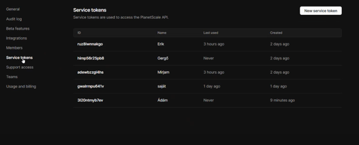
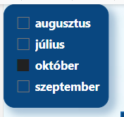
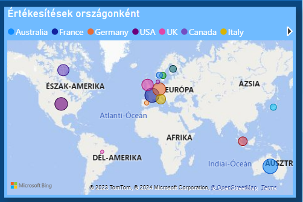
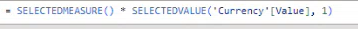

Power BI Desktop
Verzió: 2.124.1554.0 64-bit
A projectünk fő eleme a Power BI Destop. Az időnk majdnem egészében ezen az appon dolgoztunk, táblákat kapcsoltunk, adat vizualizációkat készítettünk.

A mi projektünk egy komplex Power BI projekt végig vitele. Egy adott oldalról dolgozunk, ahol több, már előre elkészített táblák alapján adat vizualizációs folyamatokat készítünk el, egészítünk ki további számításokkal, majd ezeket dashboard formájában vizualizáljuk.
A témát a Cosmo Consult KFT. -től kaptuk, a témavezetőnk Kakas Ádám volt, aki a tanulási szakaszban hetente 1-2 órás meetingeket tartott nekünk.
Az adatokat a kaggle.com-ról szereztük be, az Amazonnak az eladási adataival foglalkozunk. Az alap architektúrája egy hópehely architektúra volt, amit csillagséma architektúrára alakítottunk át a jobb átláthatóság és a könnyebb használhatóság miatt.
A munkafolyamat egy pontján kiderült, hogy a planetscale API-ja még béta verzióban van, és nem támogatja a Power BI-jal való kapcsolatot, ezért ezzel nem dolgoztunk tovább. Létrehoztunk service tokeneket, majd egyesével minden tokennek beállítottuk a jogosultságát, amivel power bi-ból tudunk csatlakozni a feltöltött adatbázishoz, de nem akart működni Power Bi-on belül.
Jobban utána olvastunk, hogy miért nem működik és láttuk, hogy az Api bétában van.
Feltöltöttük a dockerbe az adattábláinkat, hogy innen tudjuk futtatni. Felhasználóval, jelszóval tudunk csatlakozni a Power BI-on belül. Erre azért volt szükség, hogy könnyen hozzá férjünk az adatokhoz, és ne kelljen mindig letölteni.
A projectünk fő eleme a Power BI Destop. Az időnk majdnem egészében ezen az appon dolgoztunk, táblákat kapcsoltunk, adat vizualizációkat készítettünk.
A konzulensünkkel való heti konzultációkat Microsoft Teaams-en tartottuk, az itt felvett órák sokat segítettek nekünk a további munkánkban.
Az online kapcsolattartás miatt került bele ez az ingyenes platform a listánkba, többször dolgoztunk Discord-on a munkánk során. Azért ezt a platformot választottuk a fő kapcsolattartásunk eszközéül, mert egyszerre többen is meg tudjuk osztani a képernyőnket, ezzel segítve a többiek- illetve a saját munkánkat.

A konzulensünkkel való meetingek megbeszélésére, illetve kapcsolat tartáshoz szükséges kommunikációra használtuk.
A Docker konténerek futtatására szolgál. Ezek a konténerek arra szolgálnak, hogy több szoftvert és/vagy szoftvercsomagot egymástól elkülönítve, a nekik megfelelő környezetben működtessük. A konténerek image-kből hozhatók létre. Az image egy többször felhasználható minta. Legelőször a Dockerből betöltöttük a szükséges adatainkat. Ezt úgy kaptok meg, hogy Visual Studio Code-ba elindítottuk az Image-nkat (elindítottuk a szervert)
Miután betöltött a szerverünk létrehoztuk a tábláinkat, feltöltöttük bele az adatokat.

Ezután csatlakozunk a serverhez Power BI-ban, majd megadjuk a Database-t amivel dolgozzon.
Majd bejelentkezünk az adatbázisunkba.
És ezután betöltjük a tábláinkat és kezdődhet az adattisztítás és kapcsolatok kialakítása, erre csak az első belépéskor van szükség.
Az adattisztítási folyamat nagyon fontos mivel, ez készíti elő az adatainkat az elemzésre. Hogyha nincsenek jól előkészítve, hiányos, pontatlan grafikonokat, táblázatokat kapunk, rosszabb esetben értelmezhetetlen lesz az egész. Szerencsére a Power BI-ba bele van építve a Power Query amelynek együttese hatékony grafikai környezetet biztosít az adatok tisztításához és előkészítéséhez. A Power Query egy adat átalakítási és adat-előkészítési motor. A Power Query-t nem csak a Power BI használja, több más Microsoft app is alkalmazza, pl.: Microsoft Excel.
Beállítottuk a táblák oszlopait, és kitöröltük az adatokat, amik nem kellenek
Az adatmodellezés szorosan összefügg az adattisztítással. A legfontosabb célja, hogy egy olyan adatbázis alapjait teremtse meg, amely képes nagy adatmennyiségek gyors betöltésére, lekérdezésére és elemzésére. A hatékony adatmodellezés megköveteli az adatok, adat táblák közötti kapcsolatot. Minél jobban ki van építve a táblakapcsolat, annál pontosabb adatokat kapunk a lekérdezéseinkhez. Az adattábláinkat csillagséma architektúra alapján kötöttük össze, ami úgy épül fel, hogy az összes tábla egy központi táblához van kötve és azon keresztül kommunikálnak egymással az adatok. A táblákat a képen látható módon összekötöttük, az első képen a grafikai környezetben látható, a másodi kébópen pedig Natív Quary-ben.
Kezdetben így nézett ki a sémánk:
Ez pedig a végleges kialakítás, amikkel a továbbiakban dolgoztunk.

A Power BI-ban több féle képen lehet riportot, dashboard-ot létrehozni. Ennek talán az egyik legegyszerűbb módja a már meglévő adatmodellünkre ráhúzni a riportokat, dashboard-okat, amiket vizualizálunk. Az elkészült dashboard-ok részletesebb elemeit szétszedtük, és ezekből riportokat készítettünk.
Kezdeti tábláink így nézek ki a tanulási fázisban:
Majd ahogy haladtunk és egyre több mindent tudtunk:
Alapvető adatokat a kártyákon jelenítjük meg:
Stacked diagram, ami egy adott időszak alatt eladott termékek hozamát mutatja:
Ez a térkép azt mutatja, hogy honnan jöttek a rendelések:
Ez az oszlopdiagram az egyes országokban eladott áruk értékét fejezi ki:
A kördiagram a kategóriák eloszlását mutatja:
A havi lebontáshoz, egy listázó slicer:
Ezen a térképen pedig a buborékok nagysága jelzi az eladott termékek mennyiségét és értékét:
Egy kész oldal:
A mobilos nézet kialakításához a már meglévő vizualizációkat használtuk fel, kisebb módosításokkal megjelenítésben.
Így sikerült kialakítanunk egy könnyen megfogható és értelmezhető mobilbarát felületet, ami ugyanúgy teljesértékű kimutatásokat mutat be, mint az asztali verzió.
Így néz ki a szerkesztő:
Így néz ki telefonos nézetben.
Az api-s pénzváltóhoz external tools-t használtunk, amibe külön le lett töltve a tabulator editor 3. Ebben hoztuk létre a segédtáblákat és állítottuk be a pénzváltót DAX kódok segítségével. Az első próbálkozásunk, verziónk még api nélkül volt. Így nézett ki a currency váltó.
Ez a kódrészlet szolgál arra, hogy ha változtatunk a pénznemen, akkor változzon a hozzá illő szimbólumra.
Itt beállítjuk, hogy a quantity ne változzon csak az eladási adatok szorzódjanak
Ez pedig a szimbólumok formázása a kiválasztott pénznemhez.
Így néz ki a végleges api-s pénzváltónk
DAX kódok segítségével végeztük a számításokat a pénzváltáshoz, amiből néhány részlet a következő képeken látható.Egy adott héten 4-10 órát fordítottunk a projektünkre. Az utolsó két hét sűrűbb volt, mint a többi. Heti szintre lebonta az alábbiakat csináltuk:
A projektünk fő célja a Power BI megismerése, hozzá kapcsolódó, segítő technikák alkalmazása (pl.:planetscale, ami végül kudarcba fulladt), megismerése, amit a későbbiekben máshoz is tudunk alkalmazni. A munkánk utánozza, bemutatja a való életben is használatos Power BI projektet. Úgy készíttettük a kimutatásainkat, mintha egy partnertől kaptunk volna egy megrendelést, hogy készítsünk neki átlátható, összehasonlítható táblákat. Ezzel rengeteget fejlődtünk és tanultunk, amit a későbbi munkánk, tanulmányaink során fogunk tudni kamatoztatni.